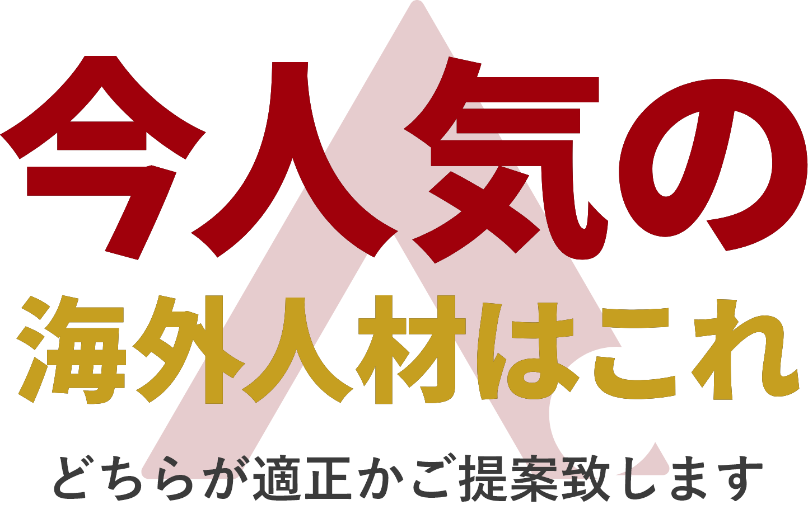

詳しく解説！
人材でお困りの方でお聞きするのが
「集まらない現状」にお困りのようです。
では、集めてしまえば良いのではないでしょうか？
必要な人材確保のお手伝いをいたします。
海外の人材に特化したAJCが
お客様が必要としている
人材を確保いたします。
労働人口の減少、少子高齢化は、日本経済の一番大きな問題です。
「経済が大きくなるチャンスに人手がいない」
そんな状況に日本経済のみならず、企業のみなさまも
頭を悩ませていらっしゃるはずです。
経済を止めずに加速する企業づくりのお手伝いをさせてください。
CASE 01
圧倒的に人手不足
今の仕事に対してあきらかに、人手不足に陥っており、社員の疲れている顔が目に見えている。
CASE 02
育てた社員が退社
予算をかけて、人材募集をして、やっと育ってきたなと思ったら、辞表を出された。
CASE 03
モチベーション低下
会社としては大事な仕事なのだけど、やりがいを感じてもらえない場合が多い。
CASE 04
正直、外国人不安
外国人の雇用には興味があるけど、うまくコミュニケーションが取れるか心配で踏み出せない。
様々な人的問題を解決いたします。

技能実習生は、日本の技術を自国の開発途上国に広めるのを目的とする
どんな事が出来る？
自社雇用も可能ですが、雇用リスクのない「派遣契約」も出来ます。
職務内容に関連する科目を選考した大学、専門学校を卒業している
または10年以上の実務経験がある場合を示します。
日本生活が長く、日本の文化に慣れていることも大きなメリット。
当てはまる職務も多く、幅広い仕事をこなすことが出来ます。
出来る仕事
特定技能者よりも幅広い職務で活躍
特定技能者は、日本の技術向上と労働不足の解消を目的とする
どんな事が出来る？
国の方針で雇用期限が無期限になる可能性(予定)があります。
国認定の特定技能の在留資格を取得している。
単純労働も出来、幅広く活躍出来る人材として注目されてます。
出来る仕事
建設業、造船・舶用工業、自動車整備業、航空業、宿泊業、介護、ビルクリーニング、農業、漁業、飲食料品製造業、外食業、素形材産業、産業機械製造業、電気電子情報関連産業
ビシェイポリテック株式会社
代表取締役 畑 康規 様
外国人雇用は視野に入れるのが
スタンダードになっている。
我社では、増産基調の中で採用の方がボトルネックになっておりました。当初は地元の日本人雇用や派遣社員を募集しながら増員対応してきました。ある程度までは集まるのですが、不安定な時期が続いたため、もともと念頭にあった外国人雇用に乗り出しました。特定技能実習生外国人人材に強いことや、最初のコンタクトを取らせていただいたときの、レスポンスが早かったという経緯から、エージェーシーさんに決めました。エージェーシーさんは、丁寧に法律の説明から、どういう経緯で外国人を採用していくのか？必要になっていくのは何なのか？と、細かく説明していただいて、何をすればいいのか？というのも非常に分かりやすく、我々からの質問や要望に対しても丁寧に聞いていただいて、連携を密に取れ不安を解消していきました。雇用した外国人の方も非常に真面目で、働く意欲が存分にあり、早く仕事を覚えてやれることとを増やしていきたいという熱意を感じられています。今後、我々は事業を拡大していく中で、外国人雇用が、「視野に入れるのが普通」というのがこれからスタンダードなのではないかなと思っております。いろいろなパターンの働き方も視野に入れながら、ダイバーシティー的雇用を推進したいと思っております。
株式会社コスモコーポレーション
代表取締役 國分 崇資 様
人口が少ない町を救う人材を、
日本人同等に共存しています。
外国人雇用については、小野町の人口が1万人を切っていることもあり、働き手の募集に困っていました。当初、外国人技能実習生を雇用し、素晴らしい人材に巡り会えたので、そこから雇用し続けました。しかし、コロナ禍ということもあり、海外からの雇用が難しいとのことで、エージェーシーさんに相談したところ、国内移動で日本人と同様に就業可能な特定技能1号人材を1か月もかからず募集できました。外国人雇用について、はじめは言葉や文化の違いに不安はありましたが、様々な在留資格や、実績がある方々をご紹介いただき安心して依頼することが出来ました。正直、海外の方でもいろいろな方がいます。しかし、それは日本人でも同じであって、個性があります。我々は外国人の方も個性を尊重し、日本人と同じように接してます。やっぱり思いやりというか人情など付き合いの中で大切にすること。異国の地で慣れない環境で必死に働いてくれる仲間であることを、こちらも必死で応援しながら、周りの支えも必要なのかなとも思っております。すると、田舎であったり、中小企業であったとしても外国人雇用が出来ることを我社が身を持って証明出来ております。今では、田舎での雇用も安定し、一生懸命働いてくれているので、すごく助かっております。
その他、ご利用者様の声
お問い合わせ
どんな些細なお悩みでもご興味いただければ、何でもお問合せ下さい。
支援・業務
内容の決定
現状をお聞きし、業務内容、申請内容などを決定致します。
お見積り
支援する内容を元に最適なプランとお見積りを発行致します。
人材のご紹介
面倒なお手続きは全てAJCが行い、お客様にあった人材をご紹介します。
サービス開始
申請手続き終了後、支援及び業務を開始致します。
すべてAJCが行いますので
ご安心下さい。